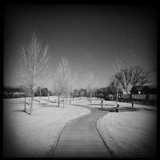

Recovered weblog entry
Path

When I awoke today
Suddenly, nothing happened
But in my dreams-
I slew the dragon
And down this beaten path
And up this cobbled lane
I'm walking in my own footsteps once again-Colin HayLens: Tejas
Film: BlacKeys SuperGrain